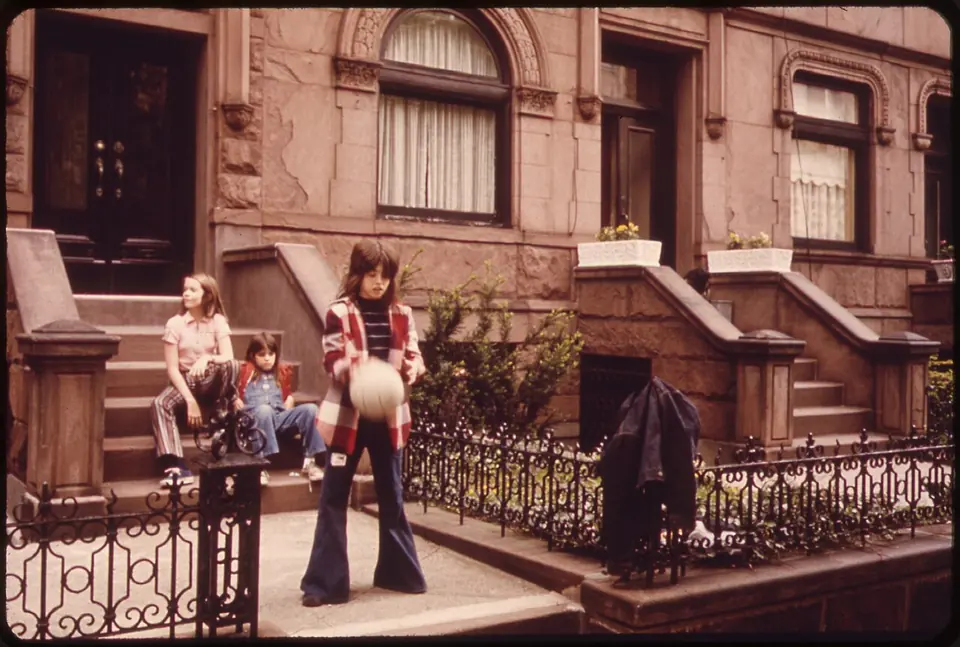
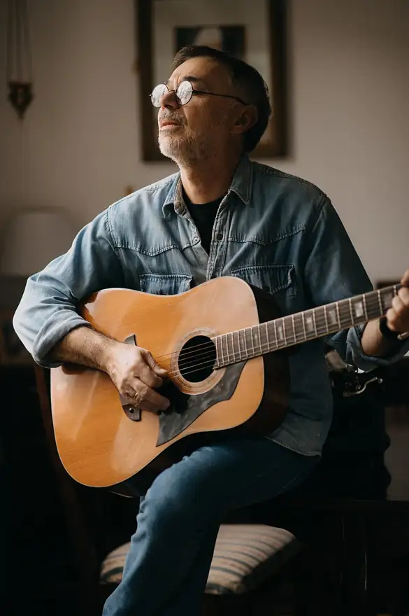
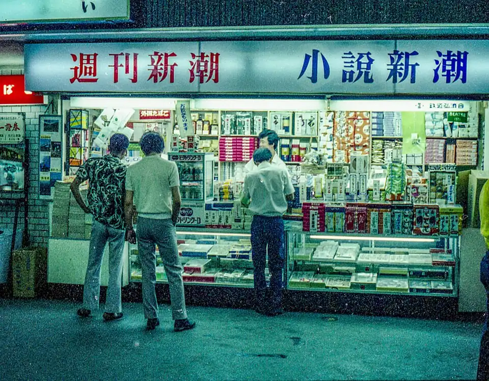
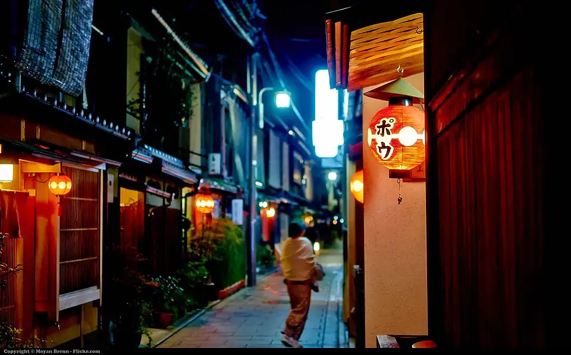

Hikigatari — Josh Turner edition · 11 songs
弾き語り・ジョシュ・ターナー編
終わりの季節から、寄り道して。
「風をあつめて」を一本の糸にして、ブルックリン、ナッシュビル、狭山、ルーアンへ。11曲。
IN THIS ISSUE
 CHAPTER 01
CHAPTER 01 CHAPTER 02
CHAPTER 02 CHAPTER 03
CHAPTER 03 CHAPTER 04
CHAPTER 04 CHAPTER 05
CHAPTER 05 CHAPTER 06
CHAPTER 06 CHAPTER 07
CHAPTER 07 CHAPTER 08
CHAPTER 08 CHAPTER 09
CHAPTER 09 CHAPTER 10
CHAPTER 10 CHAPTER 11
CHAPTER 11渋谷の喫茶店のトイレの落書きから、
ブルックリンの部屋まで。
1971年の東京で生まれた日本語の歌が、日本語のまま、海の向こうで歌われている。歌っているのは、ブルックリンのアパートでカメラを回す、ひとりのギター弾きだ。
その人は何者なのか。15歳の部屋で始まった動画の話から、ナッシュビルの歌姫、ミネソタのギターの女王、そして1973年の埼玉・狭山の8畳の寝室まで。一曲のカバーを糸にして、寄り道しながらたどってみる。
最後は、フランスのバンドで軽く締める。
すべての起点は、喫茶店のトイレの落書き
はっぴいえんど - 風をあつめて
アルバム『風街ろまん』 ／ 1971
アルバム『風街ろまん』の一曲。詞は松本隆、曲は細野晴臣Wikipedia。
詞のきっかけは、松本が通っていた渋谷の喫茶店「マックスロード」のトイレの壁に書かれていた一行、「てふてふが一匹韃靼海峡を渡って行った」だったCREA。
録音はドタバタだった。メロディがレコーディング直前までできていなかったので、大瀧詠一と鈴木茂はスタジオに呼ばれず、松本のドラム以外は全部、細野がひとりで演奏した。ギター、ドラム、ベース、オルガンを重ねても、まだメロディができない。スタジオの廊下でやっとできて、すぐに歌った。だから「起きぬけの」のところは、歌い間違えたまま残っているRe:minder。
2003年、映画『ロスト・イン・トランスレーション』で使われる。音楽プロデューサーが小山田圭吾に「この映画に合う日本の曲はないか」と尋ね、渡された音源の中から、ソフィア・コッポラと二人で選んだのがこの曲だったCINEMORE。松本隆は2024年にこう話している。「母国語は日本語。翻訳するのはフィルターをかけるようなもの。元の意味が変わってしまう」The Guardian。
そして2020年。この日本語の歌を、ブルックリンの若者が、日本語のまま歌った。
僕が彼を知ったのは、このツイートだった
Josh Turner - 風をあつめて
Happy End Cover ／ 2020
送りバントの高山さんが「これ最高だから聴いてください」と投げていた。高山さんは、めっちゃ面白い人だ。その人が「最高」と言うんだから、押すしかない。押したら、本当に最高だった。……と書きつつ、正直に言うと、Priscilla Ahn の版を聴いていたのが先だったかもしれない。どっちが先でもいい。たどり着いた先が、この人だった。
ブルックリンを拠点にする、ギターも歌も鍵盤もやるミュージシャン。15歳だった2007年にYouTubeチャンネルを始めた。2014年、ポール・サイモン「Graceland」のカバーで『Good Morning America』に出ている公式サイトWikipedia。
決めごとがある。口パクも、ごまかしも一切なし。聴こえている音を、そのまま弾いて見せる。カバーする曲はアルゴリズムではなく、自分の好奇心で選ぶ公式サイト。
この動画で、歌とギターとベースと鍵盤がジョシュ、ドラムともう一本のギターと歌が相棒のカーソン・マッキー。そして説明文に、こうある。「この曲を最初に知ったのは、Priscilla Ahn の美しい版だった。日本人の家族ぐるみの友人が、J-POPのコンピレーションをくれて、その中に入っていた」本人の動画説明。
公開の4日後、作詞した松本隆本人がこう書いた。「ドラムのフィルまで感じつかんでる。細野さんから、最近アメリカ人が日本語のままカバーしてるよと聞いてたけど、ほんとなんだね」松本隆のX。はっぴいえんど、まだ連絡網が生きている。
ジョシュがこの歌を知った入口は、僕と同じだった。もうひとりの歌い手へ。

Photo: Suzanne Szasz / NARA / Public domain / Wikimedia Commonsジョシュがこの歌を知った、もうひとつの入口
Priscilla Ahn - 風をあつめて
アルバム『ナチュラル・カラーズ』 ／ 2012
ジョシュが入口にした、その版がこれだ。
Priscilla Ahn はアメリカのシンガー・ソングライター。J-POPのカバー集『ナチュラル・カラーズ』に「風をあつめて」が入っていて、ほとんどの曲を日本語の詞のまま歌っているBARKSWikipedia。
選んだのは本人だった。「〈風をあつめて〉は、私からやりたいとリクエストした曲です。映画『ロスト・イン・トランスレーション』のサントラを聴いて、歌詞の内容はまったくわかりませんでしたが、すごく好きになりました。私もバンドの一員として部屋の中にいるような感覚になるんです」CDJournal。
寄り道のつもりが、ここで足が止まる。この人は何者なのか。15歳の部屋まで、さかのぼる。
車のデザイナー志望の少年、スマホで名刺を撮る
Josh Turner - Sultans of Swing
Dire Straits Cover ／ 2012
ジョシュア・リー・ターナー。子どもの頃の夢は、車のデザイナーだった。ギターを始めたのは2006年1月。その約1年後、15歳でYouTubeチャンネルを作った。音楽はあくまで趣味。ところがいくつかの動画が思いがけず注目を集めて、まったく別の道が開く公式サイトWikipedia。
最初に火がついたのが、2012年のこのダイアー・ストレイツだ。公式サイトいわく、この1本だけで1,400万回以上見られている公式サイト。
本人の説明文がいい。「フレーズやソロを完璧になぞるつもりはない。曲の感じが伝わればいい」。ギターはメキシコ製のテレキャスター。そして、カメラは iPhone 4s本人の動画説明。
趣味のはずの動画が、2年後、テレビの朝の番組に本人を連れていく。
ギター1本で、80年代のドラムの音を出せ
Josh Turner - Graceland
Paul Simon Cover ／ 2014
インディアナポリスのバトラー大学で音楽を学んでいた2014年、4年生のとき。ポール・サイモンの「Graceland」をひとりで弾いて歌ったこの動画が、アメリカの朝の番組『Good Morning America』に本人を連れていったWikipedia公式サイト。
本人いわく「アレンジが難しい曲だった。リズムの上でいろんなことが起きている。80年代のドラムの音を、エレキギター1本でどう出すか？」。足で床を踏む音を、専用の板で拾って鳴らしている本人の動画説明。
このカバーは、その後の人生の伏線になる。2018年と2019年は、ツアー公演『The Simon & Garfunkel Story』のキャストとして回り、2019年にはロンドンの O2 シェパーズ・ブッシュ・エンパイアで、『Graceland』をまるごと祝うステージの主役としてポール・サイモンを演じたWikipedia公式サイト。
ひとりで全部やる男には、ひとりだけ、ずっと隣にいる相棒がいる。
ブルックリンのアパートが、スタジオ
The Other Favorites - Angelina
EP『Fools』 ／ 2017
The Other Favorites は、ジョシュと、長年の相棒カーソン・マッキーのフォーク・デュオ。2017年にEP『Fools』、2018年にオリジナル・アルバム『Naysayer』、2019年にライブ盤『Live in London』、2021年に『Unamericana』Wikipedia。「風をあつめて」でドラムを叩いていたのも、このカーソンだ。
「Angelina」は二人で書いたオリジナル。説明文には一行、「自分のアパートで、ライブで録った」本人の動画説明。2016年にニューヨークへ移り、音楽一本で食べていくと決めてからの、部屋の音だ公式サイト。
大きなスタジオはない。あるのは、部屋と、マイクと、隣の相棒。それで十分だと、この動画が証明している。
部屋には、友だちも来る。2021年、ジョシュは車で国を横断して、友だちの家を順番に回った。

Photo: Shixart1985 / CC BY 2.0 / Wikimedia Commonsギターの女王と、鎖の歌
Josh Turner feat. Elle Cordova & Toni Lindgren - The Chain
Fleetwood Mac Cover ／ 2024
2021年、ジョシュは妻のケリーと車でアメリカを横断し、旧友や新しい友だちと一曲ずつ録っていった。『Among Friends: A Musical Travelogue』と題されたその旅の相手のひとりが、当時「Reina del Cid」と名乗っていた、エル・コルドバだった公式サイト。
シンガー・ソングライター。2007年、YouTubeのために「Reina del Cid」という名前を作った。スペインの英雄譚「エル・シッド」から取った名前で、自分のギターにそのあだ名をつけ、その「女王（Reina）」を名乗った。相棒のギタリスト、トニ・リンドグレンと、2013年から2015年までセントポールのバーで毎週月曜の夜に出演を続け、2020年の初めにロサンゼルスへ移ったWikipedia。
二人は毎週、日曜の朝にカバー動画を出し続けてきた。2025年1月、その「Sunday Morning」シリーズを終え、今度は満月のたびに一曲出す「Full Moon Tunes」を始めているWikipedia。フリートウッド・マックの「The Chain」を、その二人とジョシュに、ダモン・スミスとジェイソン・バーガーを加えた5人で鳴らす本人の動画説明。
旅の相手は、もうひとりいる。ナッシュビルで出会った声だ。
ナッシュビルで、いちばんナッシュビルな曲を
Josh Turner feat. Allison Young - Crazy
Patsy Cline Cover ／ 2018
2017年、ジョシュはネットでアリソン・ヤングと知り合うWikipedia。翌2018年、ツアーでナッシュビルに寄ったとき、「ずっと声に憧れていた」彼女に動画を一緒に撮らないかと頼んだ。返事は、イエス。それなら「ナッシュビルらしさの極みを」と彼女が提案したのが、ウィリー・ネルソンが書いてパッツィ・クラインで広まった「Crazy」だった本人の動画説明。
その一本が、二人の歌の始まりになる。2022年にはオリジナルのEP『May 9-12』を出してツアーを回り、2023年にはバンド「The Bygones」を結成。バワリー・ボールルームやトルバドールといった名物の会場に立ち、2024年には The Wood Brothers のツアーの前座も務めた公式サイト。
2025年2月、二人は The Bygones の活動を続けないと発表したWikipedia。それでもこの3分24秒には、始まりの夜の空気が、そのまま残っている。
部屋で録った歌の話を、もうひとつ。時計を1973年の、埼玉・狭山まで巻き戻す。
8畳の寝室で録った、終わりの歌
細野晴臣 - 終りの季節
アルバム『HOCHONO HOUSE』（原曲は1973年『HOSONO HOUSE』） ／ 2019
「風をあつめて」を作曲した細野晴臣は、1972年の秋、埼玉県狭山市の通称「アメリカ村」に移り住んだ。1973年の最初のソロ・アルバム『HOSONO HOUSE』は、その自宅で録られている。リビングに16トラックの卓を置き、演奏は8畳ほどの寝室。狭い部屋の音の回り込みが、このアルバム特有の音になった。録音は2月15日から3月16日まで、毎日午後に5時間ほど、3日に1日休むペースでWikipedia。
「終りの季節」はその4曲目。作詞の「宇野もんど」は細野の変名で、前の年に斉藤任弘に提供した曲のセルフカバーだWikipedia。
それから46年。活動50周年の2019年、細野はこのアルバムをまるごと作り直した。題して『HOCHONO HOUSE』。演奏も歌もプログラミングも録音も編集も、全部ひとりで。曲順は、元のアルバムと逆Wikipedia。ここで聴けるのは、その2019年の「終りの季節」だ公式の音源。
ブルックリンのアパートで、ひとりで全部の楽器を重ねる男の、ちょうど半世紀前。寝室で録った歌が、ここにもあった。
この歌を、自分の声で歌い直した人がいる。

Photo: wilford peloquin / CC BY 2.0 / Wikimedia Commons寄り道の、さらに寄り道
rei harakami - owari no kisetsu
アルバム『lust』 ／ 2005
細野晴臣が1973年の『HOSONO HOUSE』に入れた「終りの季節」を、レイ・ハラカミが本人の声でカバーしたNiEW。
この人の話は長くなるので、特集「君はレイ・ハラカミを知っているか」にまとめた。
最後は、フランスから。日本と縁の深いバンドで締める。

Photo: Moyan Brenn / CC BY 2.0 / Wikimedia Commons最後に、これをどうぞ
Tahiti 80 - Heartbeat
アルバム『Puzzle』 ／ 1999
フランス・ルーアンの大学で結成されたバンド公式サイト。1999年、当時のマネージャーがフランスでコーネリアスのマネジメントも担当していて、デモを小山田圭吾に渡せた。小山田はそのデモ版「Heartbeat」を自分のコンピレーションに入れたCINRATime Out Tokyo。メンバーいわく「本当に幸運だった」CINRA。
デビュー・アルバム『Puzzle』は日本でゴールドディスクになり、その中でいちばん成功したシングルが「Heartbeat」だった公式サイト。
実は Tahiti 80 も「風をあつめて」をカバーしている。それも良かった。でも最後はこっち。これだけは絶対に紹介したかった。
関連動画 — Tahiti 80 の「風をあつめて」
一曲のカバーを追いかけたら、知らない人に会えた。
渋谷の喫茶店のトイレの落書きが、狭山の寝室を通り、ロサンゼルスのスタジオを通り、ブルックリンのアパートで、日本語のまま鳴っていた。部屋で録った歌は、海を渡る。
トイレの落書きから始まった歌は、まだ旅の途中だ。次回の弾き語りもお楽しみに。
この特集をシェア
▼この記事を書くきっかけになった動画
「歌を覚える季節は終わらない」
SOURCES
- Wikipedia — 風をあつめて
- CREA — 松本隆と「風街」
- Re:minder — 「風をあつめて」誕生
- CINEMORE — ロスト・イン・トランスレーション
- The Guardian — Happy End
- Joshua Lee Turner 公式サイト
- Wikipedia — Joshua Lee Turner
- 松本隆（X・2020年5月30日）
- Wikipedia — Elle Cordova
- CDJournal — Priscilla Ahn インタビュー
- BARKS — ナチュラル・カラーズ
- Wikipedia — ナチュラル・カラーズ
- Wikipedia — HOSONO HOUSE
- Wikipedia — HOCHONO HOUSE
- NiEW — 『HOSONO HOUSE』再訪
- CINRA — Tahiti 80
- Tahiti 80 公式サイト
- Time Out Tokyo — Tahiti 80
OTHER MAGAZINES — ほかの特集